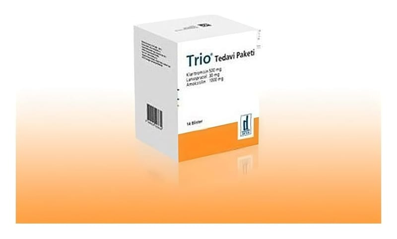

Trio 1000 mg + 500 mg + 30 mg Tedavi Paketi, 6X14 Adet

Ne için kullanılır
KT · Bölüm 1TRİO, birer antibiyotik olan klaritromisin ve amoksilinin yanında mide hücrelerinden asit salınımını azaltan bir ilaç olan lansoprazolü içeren bir tedavi paketidir. Klaritromisinler, 500 mg film tablet, sarı film kaplı, homojen görünüşlü, bir yüzü ortadan çentikli, dikdörtgen (oblong) tabletlerdir. Amoksisilinler, 1000 mg tablet beyaz-hemen hemen beyaz, bir yüzü DMS-1000 yazılı, diğer yüzü ortadan çentikli, oblong tabletlerdir. Lansoprazoller, 30 mg mikropellet kapsülün gövde rengi krem, kapak oranj renkli, opak sert jelatin kapsüller (1 no’lu) içinde, beyaz - kremimsi beyaz renkli pelletlerdir. TRİO tedavi paketinin içindeki klaritromisin ve amoksisilin, bakteri öldürücü etkiye sahiptirler ve mide ve oniki parmak bağırsağında ülser oluşumundan sorumlu tutulan H. pylori bakterisinin yok edilmesine yardımcı olurlar. Amoksisislin trihidrat sığır, koyun veya keçi sütünden üretilmektedir. Aynı paketin içinde yer alan lansoprazol ise midedeki asit salgılayan hücrelerden asit salgılanmasını engelleyerek etki gösterir.
TRİO tedavi paketi, içinde yer alan lansoprazol, amoksisilin ve klaritromisinden oluşan üçlü form, H. pylori'yi ortadan kaldırmak için H. pylori enfeksiyonlu hastaların tedavisinde ve oniki parmak bağırsağı ülseri tedavisinde kullanılır. H. pylori etkeninin ortadan kaldırılması, oniki parmak bağırsağı ülserinin tekrarlama riskini azaltır.